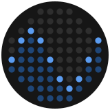

riversynth
Press a key or click the power button to start audio
Turn River Flow into Music
Press play to sonify river flow data.
Where & when
i
SettingsMusic · Layer 2 · Data → Sound · Export
Music
Layer 2
A second sound playing the same river. i
Data → Sound
Let the river move the knobs too. i
Save & export
Modulate
Pick an instrument and shape the sound with six knobs. The middle of each knob is the preset's own sound.
Shape the sound. Drag a knob up or down (double-click resets it), or hit 🎲 Random for a surprise.
Play It Yourself
Tap the keys below, or use your computer keyboard: the bottom row (Z–M) and top row (Q–I) are the white keys.
OctaveC4
Lower octave: Z–M (black keys S D G H J) · upper octave: Q–I (black keys 2 3 5 6 7) · -/= octave